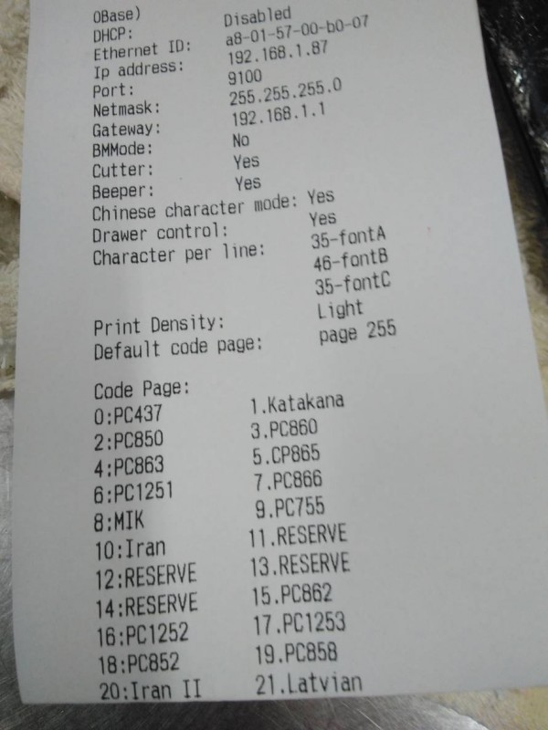
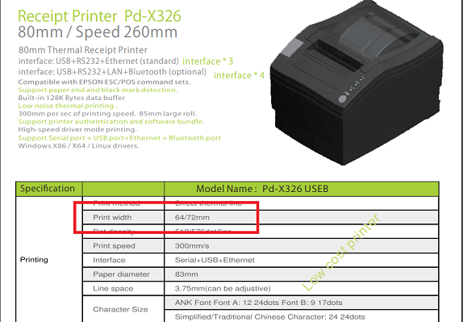
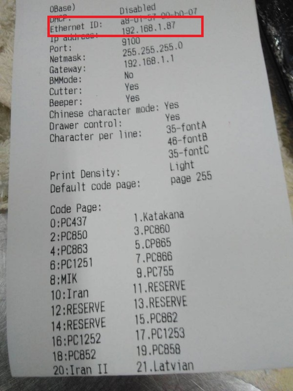
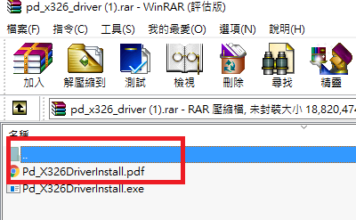
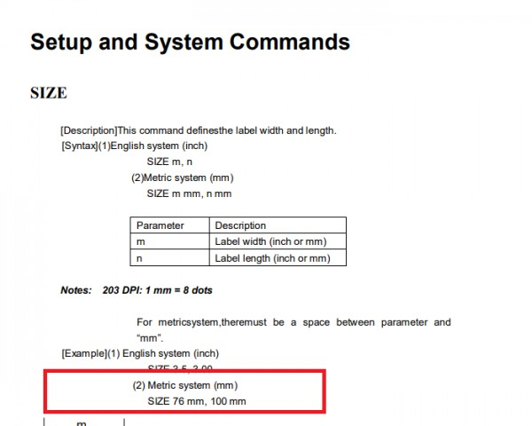
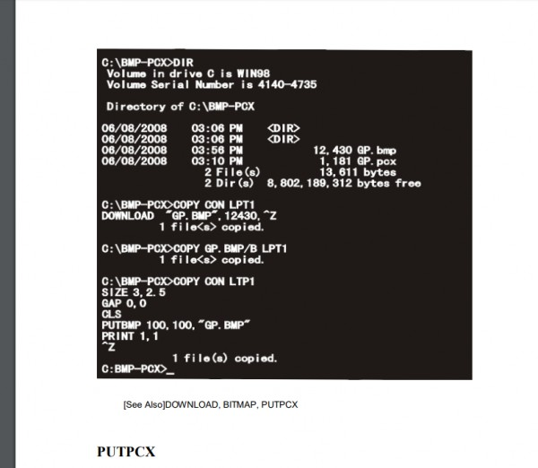
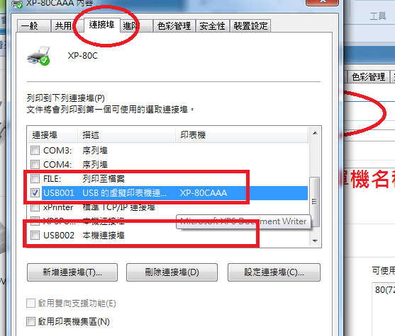

因圖檔超過1MB同文同時轉寄GMAIL
原本是使用prowill pd-s316，因裁刀問題汰換同牌pd-X326，
已安裝驅動程式，但列印寬度不如以前可全滿80MM，但內容亦無邊界可調整。
使用您的預設80MM模式，自"內用"後字體如桌號金額皆無法印出，調整虛線比例則會造成字體印製重疊
使用預設58MM模式，則字體變小，且數量印出亦會重疊至菜單上
敬請協助
2.每日報表匯至PDF寄GMAIL會被安全性檔下， 須降低安全設定(已解決)
3.可否設定每日打烊均寄出報表，無須每日重複至頁面按?
因圖檔超過1MB同文同時轉寄GMAIL
原本是使用prowill pd-s316，因裁刀問題汰換同牌pd-X326，
已安裝驅動程式，但列印寬度不如以前可全滿80MM，但內容亦無邊界可調整。
使用您的預設80MM模式，自"內用"後字體如桌號金額皆無法印出，調整虛線比例則會造成字體印製重疊
使用預設58MM模式，則字體變小，且數量印出亦會重疊至菜單上
敬請協助
2.每日報表匯至PDF寄GMAIL會被安全性檔下， 須降低安全設定(已解決)
3.可否設定每日打烊均寄出報表，無須每日重複至頁面按?
1.看 pd-X326 的規格說明 最寬可印 72mm ,這跟一般印單機規格一樣,您可以印一下測試頁 如果印出的內容 左邊界還是很寬 那可以合理懷疑 此台印單機硬體組裝或韌體設置上是有問題的,列印測試頁方法 請參考下面影片
示範影片一
https://www.youtube.com/watch?v=D0mDVQKoFyY
示範影片二
https://www.youtube.com/watch?v=ApmE0R-kA8E
2.正常來說 測試頁應該會跟上面影片的邊界差不多 如果測試頁邊界正常 那就是很可能是驅動程式問題
如果不正常 那就是機器本身硬體或韌體設置有問題 應該去該賣家要求更換新品 ,或刷新韌體設置
測試如此，看來寬度一樣，不知道哪出問題 
您的照片只有部分測試頁內容 沒看到有紙張大小設置的參數?
站長去prowill的網站查了一下 發現PD-X326 是支援 兩總紙張的機器
站長猜測機器的韌體預設是64mm的紙 只要改成72mm就正常了

站長提供兩個方向供您參考
打開瀏覽器
http://192.168.1.87
看看是否能連上 進入設定參數 IP是看您測試頁上的IP

站長去下載了PD-X326的驅動程式
發現壓縮包裡有個PDF的說明

打開後 發現是設置機器韌體的指令

發現有個SIZE的指令可以設置機器韌體紙張大小的參數
您必須使用DOS 指令 將設定寫入機器韌體

1.您必須找出 目前USB port 代號ˋ是多少 像下面就是 USB001

請參考這篇
2.打開DOS命令列模式
指令像下面
C:\COPY CON USB001 (按Enter)
SIZE 76mm,500mm (按Enter)
Ctrl + Z (按Enter)
3.站長沒用過這台機器 不過站長直覺是韌體參數設置的問題